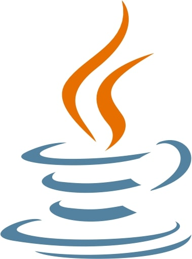
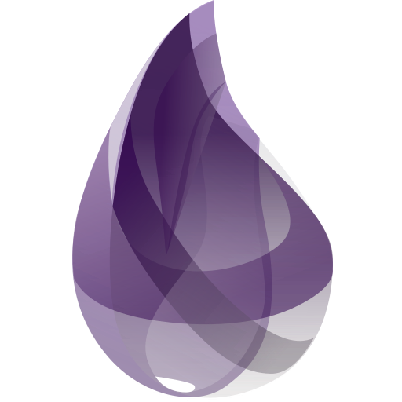
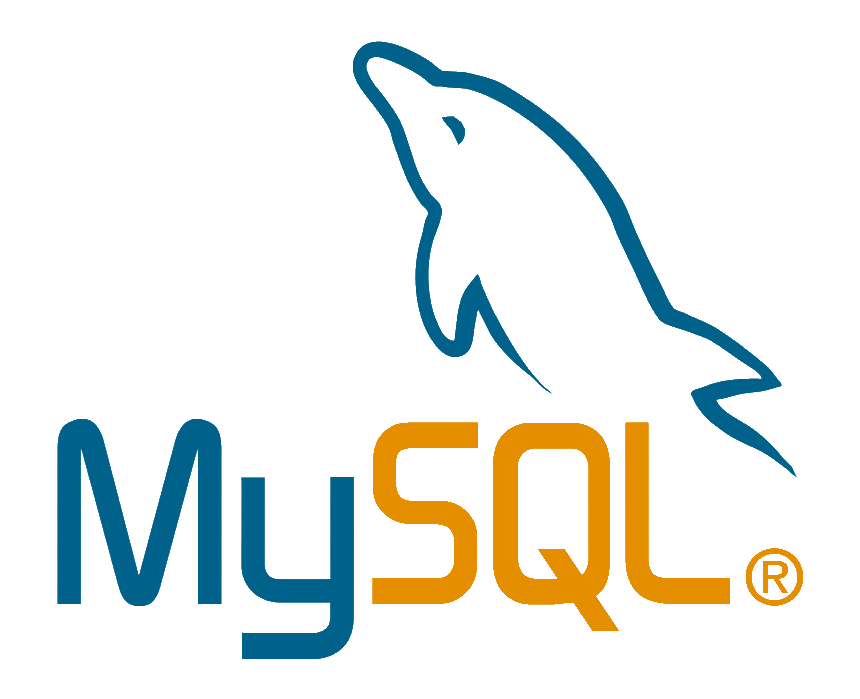

I have experience with both functional and object-oriented software
development, and my background in physics brings an analytical mindset and strong
problem-solving abilities to the world of programming. I completed a full-stack Java
bootcamp where I gained ample experience working both individually and with a team
developing complex, full stack applications. Each of these projects utilized multiple
languages and frameworks, such as Java, HTML, Javascript, React, mySQL, and others.
Additionally, I have a firm grasp on functional programming and have experience
programming in functional specific languages like Elixir. My experience as a Junior
Elixir Developer at Thoth Software has refined my skills further, allowing me to build
robust, scalable applications in the functional paradigm. I am always striving to learn
more about whatever field I’m working in, and constantly looking for ways to improve upon
my work. With my drive and unique experience, I’m excited to contribute to a team of
like-minded software engineers.
Skills:
Languages:

Java

JavaScript

HTML

CSS

C++

Python

Elixir

Lisp
Frameworks:

Spring

React

Phoenix LiveView
Tools:

Visual Studio

Git/GitHub

mySQL